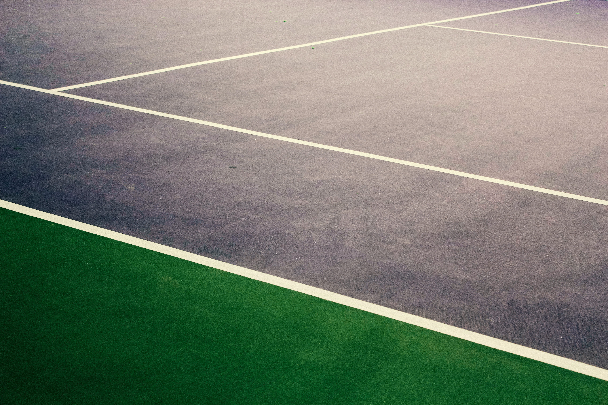
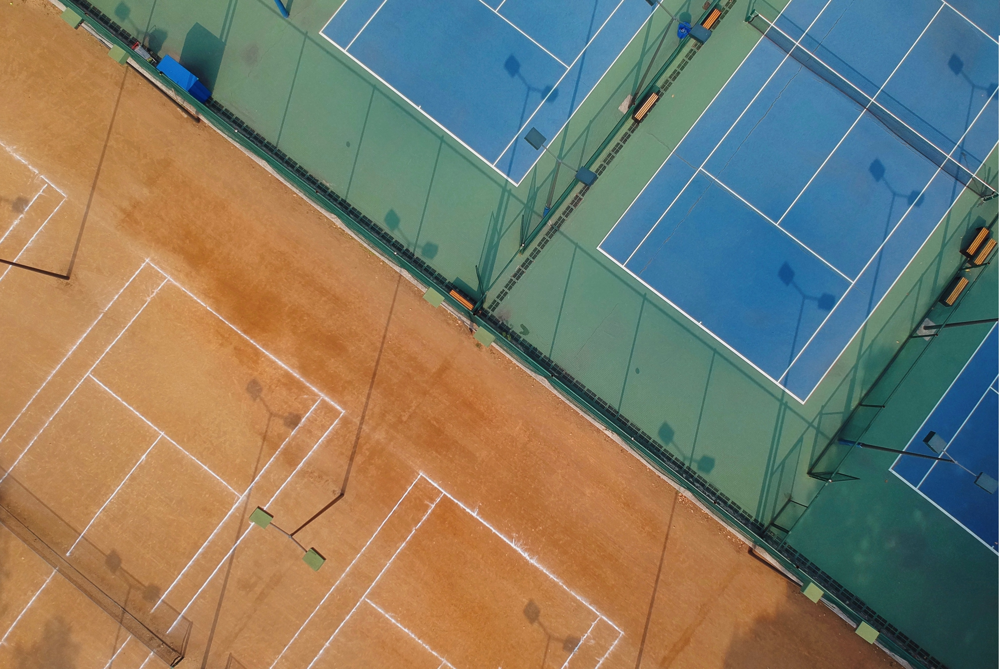

<section id="courts" class="container-fluid">
  <div class="p-5 row">
    <div class="col-md col-lg-6">
      <div class="pt-sm-3 pt-md-4 pt-lg-5">
        <h2 class="d-block">NUESTRAS INSTALACIONES</h2>
      </div>
      <div class="py-1">
        <p class="d-block">En este centro no sólo se disponen de pistas de pádel, sino también de squash y
          tenis. Disponemos de un total de 8 pistas climatizadas, de las cuales 6 son de pádel y 2 de
          squash.
          Además disponemos de 4 pistas de tenis al aire libre, dos de tierra batida y dos de resina
          sintética. </p>
      </div>
    </div>
    <div class="col-md col-lg-6">
      <div class="carousel slide" data-ride="carousel">
        <div id="carousel_padel" class="carousel slide" data-ride="carousel">
          <div class="carousel-inner">
            <div class="carousel-item active">
              
            </div>
            <div class="carousel-item">
              
            </div>
            <div class="carousel-item">
              
            </div>
          </div>
          <a class="carousel-control-prev" href="#carousel_padel" role="button" data-slide="prev">
            <span class="carousel-control-prev-icon" aria-hidden="true"></span>
            <span class="sr-only">Previous</span>
          </a>
          <a class="carousel-control-next" href="#carousel_padel" role="button" data-slide="next">
            <span class="carousel-control-next-icon" aria-hidden="true"></span>
            <span class="sr-only">Next</span>
          </a>
        </div>
      </div>
    </div>
  </div>
</section>
